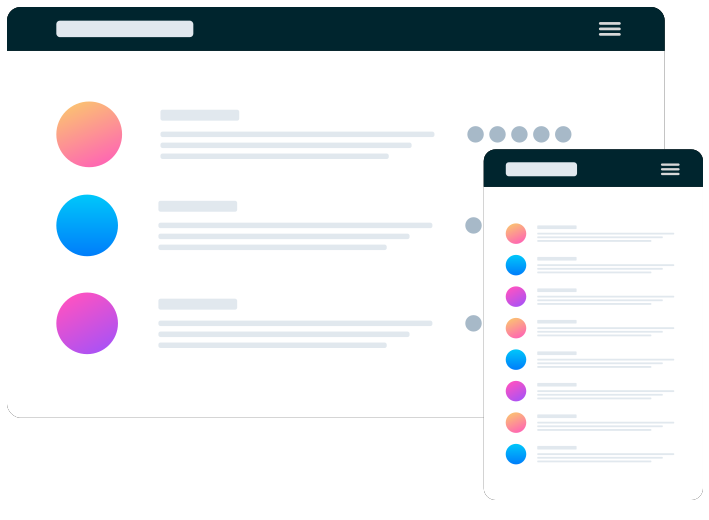

Build The Community Your Fans Will Love
Huddle re-imagines the way we build communities. You have a voice, but so does your audience. Create connections with your users as you engage in genuine discussion.
Huddle re-imagines the way we build communities. You have a voice, but so does your audience. Create connections with your users as you engage in genuine discussion.